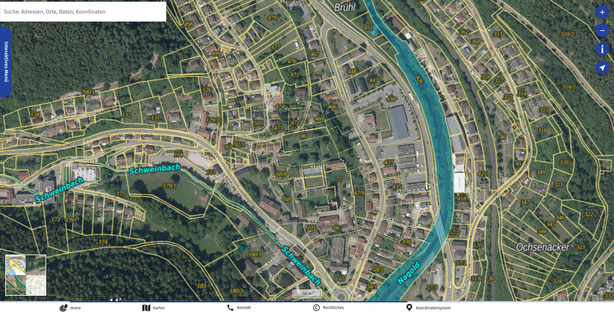
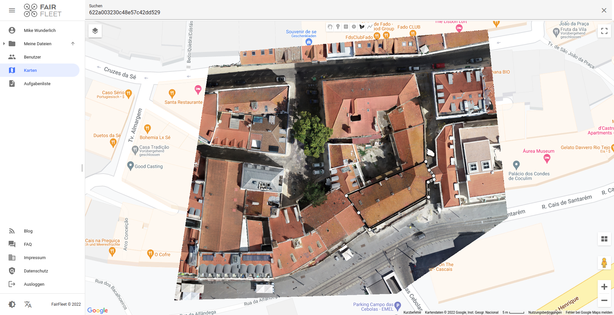
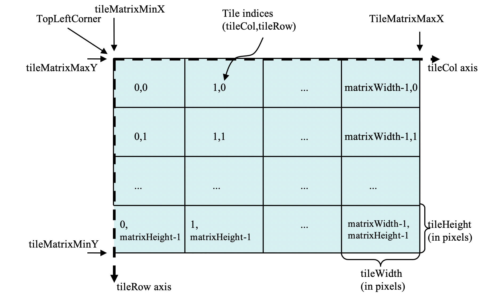
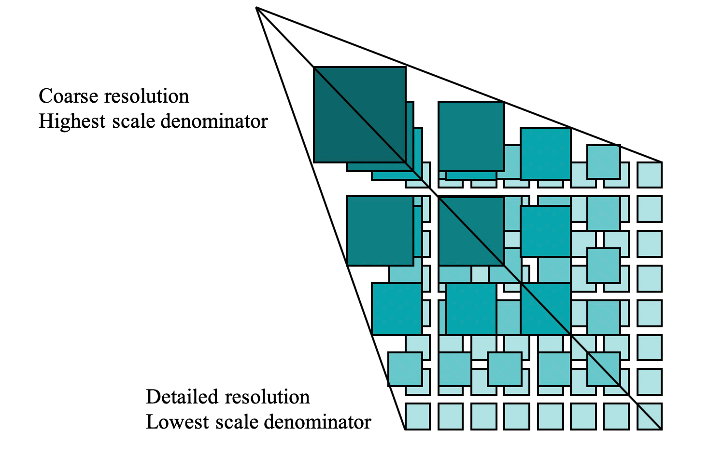
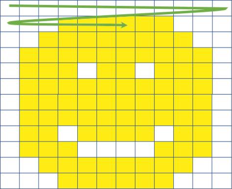
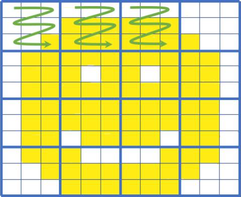

Hochschule Anhalt
Anhalt University of Applied Sciences
Fachbereich Architektur, Facility Management und Geoinformation
Institut für Geoinformation und Vermessung
Anhalt University of Applied Sciences
Fachbereich Architektur, Facility Management und Geoinformation
Institut für Geoinformation und Vermessung
Technischer Vergleich von Cloud Optimized GeoTIFFs mit bewährten OGC-Standards wie dem WMS, WMTS oder TMS im Bereich WebGIS
Gliederung
- Einleitung
- Standards
- Datenverarbeitung
- Datenbereistellung
- Nutzung der Daten (WebGIS)
- Gewichtete Matrix
- Ergebnisse
- Zusammenfassung
Einleitung
Google Maps

Geoportal-BW

FairFleet
Standards
Tile Matrix Set
Web Map Service
Web Map Tile Service
Cloud Optimized GeoTIFF
Tile Matrix Set (TMS)


Web Map Service (WMS)
https://geoserver.masterarbeit-cog.de/ows?
SERVICE=WMS&
VERSION=1.3.0&
REQUEST=GetMap&
LAYERS=wms:ortho_strenzfeld&
STYLES=&
CRS=EPSG:3857&
FORMAT=image/png
BBOX=1299642,6765837,1304883,6769892&
WIDTH=768&
HEIGHT=490&
Web Map Tile Service (WMTS)
https://geoserver.masterarbeit-cog.de/gwc/service/wmts?
Service=WMTS&
Version=1.0.0&
Request=GetTile&
layer=wmts:ortho_strenzfeld&
style=&
tilematrixset=WebMercatorQuad&
Format=image/vnd.jpeg-png&
TileMatrix=15&
TileCol=17447&
TileRow=10849Cloud Optimized GeoTIFF (COG)


Datenverarbeitung

Version 3.22.3 Białowieża
Version 3.4.1
TMS
Anzahl der Threads
cat /proc/cpuinfo | grep processor | wc -l
Processing
gdal2tiles.py
--zoom=0-23
-s EPSG:3857
--processes=24
./Ortho.tif
./Ortho-TMS/
MultiResolution Processing
gdal2tiles.py -p mercator -s EPSG:3857 -z 0-20 --processes=24
./Ortho.tif ./Ortho-TMS/ ; \
gdal2tiles.py -p mercator -s EPSG:3857 -z 21 --processes=24
./Ortho.tif ./Ortho-TMS/ ; \
gdal2tiles.py -p mercator -s EPSG:3857 -z 22 --processes=24
./Ortho.tif ./Ortho-TMS/ ; \
gdal2tiles.py -p mercator -s EPSG:3857 -z 23 --processes=24
./Ortho.tif ./Ortho-TMS/
WMS / WMTS
gdal_translate
./DSM.tif
./wms/DSM.tif
-co TILED=YES
-co COPY_SRC_OVERVIEWS=YES
-co COMPRESS=DEFLATECOG
gdal_translate
./Ortho.tif
./cog/Ortho.tif
-of COG
-co COMPRESS=DEFLATE
-co NUM_THREADS=ALL_CPUSDatenbereistellung
Amazon Web Services (AWS)
Simple Storage Service (S3)
Elastic Compute Cloud (EC2)
Geoserver
Nutzung der Daten
v6.12.0
Minimal WebGIS
HTML:
TypeScript:
import Map from 'ol/Map';
import View from 'ol/View';
import OSM from 'ol/source/OSM';
import TileLayer from 'ol/layer/Tile';
const map = new Map({
layers: [
new TileLayer({source: new OSM()})
],
view: new View({
center: [0, 0],
zoom: 2
}),
target: 'map'
});TMS
import TileLayer from 'ol/layer/Tile';
import XYZ from 'ol/source/XYZ';
const TMS = new TileLayer({
extent: [1299642, 6765838, 1304883, 6769892],
preload: Infinity,
source: new XYZ({
attributions: 'Institut für Geoinformation und Vermessung (IGV), Hochschule Anhalt',
minZoom: 0,
maxZoom: 21,
url: 'https://data.masterarbeit-cog.de/tms/ortho_strenzfeld/{z}/{x}/{-y}.png'
}),
})WMS
import Image as ImageLayer from 'ol/layer';
import ImageWMS from 'ol/source/ImageWMS';
const wms = new ImageLayer({
extent: [1299642, 6765838, 1304883, 6769892],
source: new ImageWMS({
attributions: 'Institut für Geoinformation und Vermessung (IGV), Hochschule Anhalt',
url: 'https://geoserver.masterarbeit-cog.de/wms',
params: {'LAYERS': 'wms:dsm_strenzfeld'},
serverType: 'geoserver',
ratio: 1,
}),
});WMTS - Vorbereiten
import {get as getProjection} from 'ol/proj';
import {getTopLeft, getWidth} from 'ol/extent';
const projection = getProjection('EPSG:3857');
const projectionExtent = projection.getExtent();
const size = getWidth(projectionExtent) / 256;
const resolutions = new Array(22);
const matrixIds = new Array(22);
for (let z = 0; z < 22; ++z) {
// generate resolutions and matrixIds arrays for this WMTS
resolutions[z] = size / Math.pow(2, z);
matrixIds[z] = z;
}WMTS
import TileLayer from 'ol/layer/Tile';
import WMTS from 'ol/source/WMTS';
import WMTSTileGrid from 'ol/tilegrid/WMTS';
const WMTSLayer = new TileLayer({
extent: [1299642, 6765838, 1304883, 6769892],
source: new WMTS({
attributions: 'Institut für Geoinformation und Vermessung (IGV), Hochschule Anhalt',
url: 'https://geoserver.masterarbeit-cog.de/gwc/service/wmts',
layer: 'wmts:ortho_strenzfeld',
matrixSet: 'WebMercatorQuad',
format: 'image/vnd.jpeg-png',
style: '',
projection: projection,
tileGrid: new WMTSTileGrid({
origin: getTopLeft(projectionExtent),
resolutions: resolutions,
matrixIds: matrixIds,
}),
}),
});COG
import GeoTIFF from 'ol/source/GeoTIFF';
import TileLayer from 'ol/layer/WebGLTile';
const COGLayer = new TileLayer({
source: new GeoTIFF({
sources: [
{
url: 'https://data.masterarbeit-cog.de/cog/ortho_lindenrain.tif'
},
],
})
})
COGLayer.getSource().setAttributions('Institut für Geoinformation und Vermessung (IGV), Hochschule Anhalt');
Gewichtete Matrix
- Datenaufarbeitung (Dauer)
- Datenbereitstellung (Dauer)
- Datenabruf (Dauer)
- Datenbereitstellung (Kosten)
- Visualisierung (durch den Nutzer)
- Rasterwerte abfragen (durch den Nutzer)
- Interoperabilität (der Standards)
Ergebnisse
Ergebnisse
Gewichtete Matrix mit einheits Faktor
| Kriterium | Faktor | TMS | WMS | WMTS | COG |
|---|---|---|---|---|---|
| Datenaufarbeitung (Dauer) | 1 | 3 | 9 | 9 | 6 |
| Datenbereitstellung (Dauer) | 1 | 3 | 6 | 6 | 9 |
| Datenabruf (Dauer) | 1 | 9 | 3 | 9 | 6 |
| Datenbereitstellung (Kosten) | 1 | 9 | 3 | 3 | 9 |
| Visualisierung (durch den Nutzer) | 1 | 0 | 6 | 6 | 9 |
| Rasterwerte abfragen (durch den Nutzer) | 1 | 0 | 6 | 6 | 9 |
| Interoperabilität (der Standards) | 1 | 0 | 6 | 6 | 9 |
| Gesamtwert | 24 | 39 | 45 | 57 | |
Zusammenfassung
- Unterschiedlichste Anwendungsfälle
- Referenzprojekt eines Drohnenpiloten
- Datenprovider
- Tiefbau-Dokumentation
Referenzprojekt eines Drohnenpiloten
| Kriterium | Faktor | TMS | WMS | WMTS | COG |
|---|---|---|---|---|---|
| Datenaufarbeitung (Dauer) | 1 | 3 | 9 | 9 | 6 |
| Datenbereitstellung (Dauer) | 1 | 3 | 6 | 6 | 9 |
| Datenabruf (Dauer) | 6 | 54 | 18 | 54 | 36 |
| Datenbereitstellung (Kosten) | 9 | 81 | 27 | 27 | 81 |
| Visualisierung (durch den Nutzer) | 0 | 0 | 0 | 0 | 0 |
| Rasterwerte abfragen (durch den Nutzer) | 0 | 0 | 0 | 0 | 0 |
| Interoperabilität (der Standards) | 1 | 0 | 6 | 6 | 9 |
| Gesamtwert | 141 | 60 | 96 | 132 | |
Datenprovider
| Kriterium | Faktor | TMS | WMS | WMTS | COG |
|---|---|---|---|---|---|
| Datenaufarbeitung (Dauer) | 9 | 27 | 81 | 81 | 54 |
| Datenbereitstellung (Dauer) | 6 | 18 | 36 | 36 | 54 |
| Datenabruf (Dauer) | 6 | 54 | 18 | 54 | 36 |
| Datenbereitstellung (Kosten) | 9 | 81 | 27 | 27 | 81 |
| Visualisierung (durch den Nutzer) | 0 | 0 | 0 | 0 | 0 |
| Rasterwerte abfragen (durch den Nutzer) | 0 | 0 | 0 | 0 | 0 |
| Interoperabilität (der Standards) | 0 | 0 | 0 | 0 | 0 |
| Gesamtwert | 180 | 162 | 198 | 225 | |
Tiefbau-Dokumentation
| Kriterium | Faktor | TMS | WMS | WMTS | COG |
|---|---|---|---|---|---|
| Datenaufarbeitung (Dauer) | 1 | 3 | 9 | 9 | 6 |
| Datenbereitstellung (Dauer) | 1 | 3 | 6 | 6 | 9 |
| Datenabruf (Dauer) | 6 | 54 | 18 | 54 | 36 |
| Datenbereitstellung (Kosten) | 1 | 9 | 3 | 3 | 9 |
| Visualisierung (durch den Nutzer) | 9 | 0 | 54 | 54 | 81 |
| Rasterwerte abfragen (durch den Nutzer) | 9 | 0 | 54 | 54 | 81 |
| Interoperabilität (der Standards) | 0 | 0 | 0 | 0 | 0 |
| Gesamtwert | 69 | 144 | 180 | 222 | |
Beispiel "Tiefbau-Dokumentation"
Zusammenfassung
- Unterschiedlichste Anwendungsfälle
- Referenzprojekt eines Drohnenpiloten
- Datenprovider
- Tiefbau-Dokumentation
- neue Versionen seit Abgabe
- GDAL 3.4.2 - 08.03.2022
- OpenLayers v6.13.0 - 27.02.2022